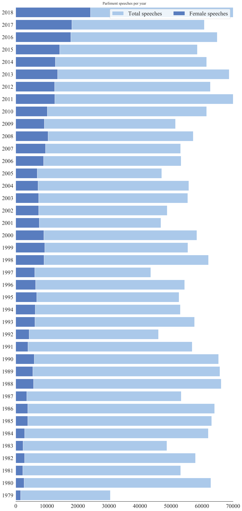
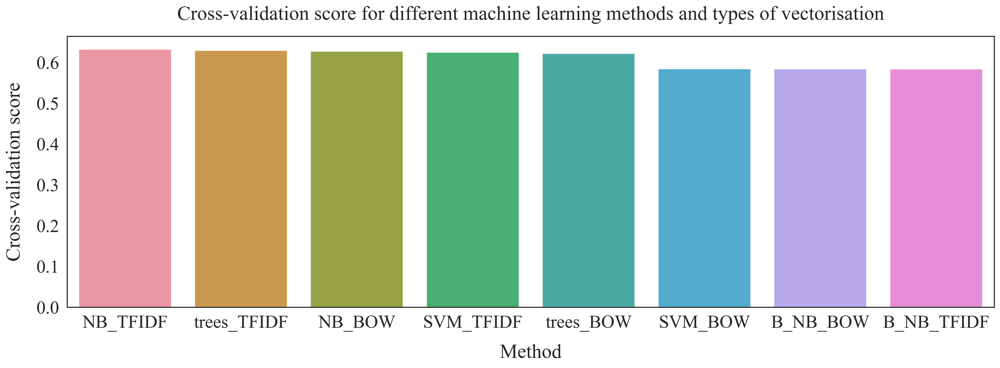
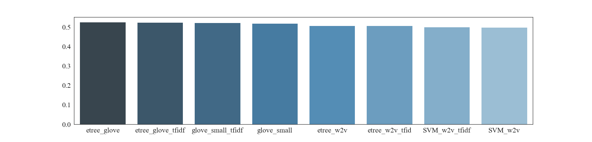
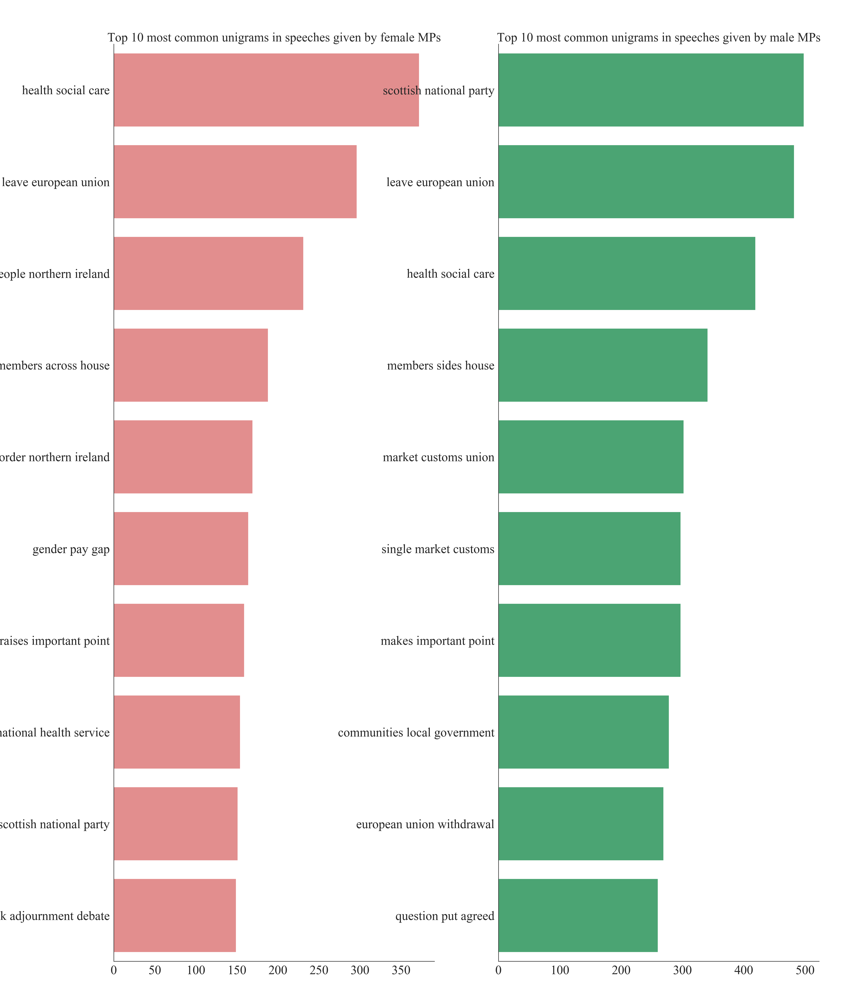
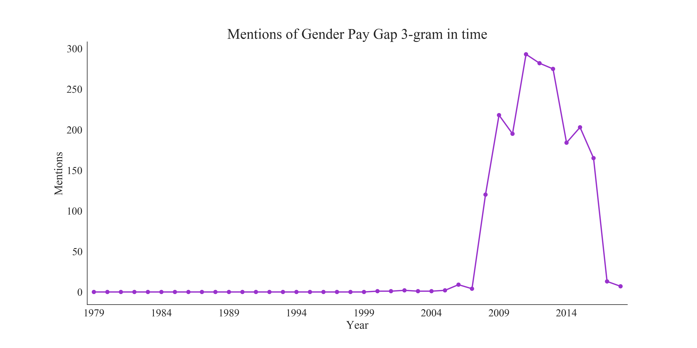

Writing a parlimentary speech using deep learning
In the 20th century language was seen as a uniquely human tool. However, we now ask Alexa or Siri what the weather will be like, without a second thought, and the results of Google translate used to be hilarious, but now are less funny, still a bit funny, but less. The methods of natural language processing (NLP) are fast advancing and are already starting to shape our everyday lives. With so much of humanity's data and communication stored in text format, any aspiring data scientist cannot ignore such a powerful set of tools.
There are innumerable potential projects one could pursue in this field and it can be hard to choose exactly where to start. I decided to couple my learning of NLP with my interest in politics. People often accuse politicians of being drab and formulaic in their pronouncements, so could a machine learn to do what they do? With this question I set out to build an algorithm that generates parliamentary speeches.
The results were quite interesting in that the algorithm was much better than I initially expected. Although MPs shouldn't worry too much about their jobs just yet (at least not from my algorithm, there may be other reasons why particular MPs should worry), I was impressed how the algorithm learnt to preserve the forms and conventions present in the UK parliamentary speeches.
To generate the text I used an LSTM (long-short term memory) neural network on a dataset created and hosted by Evan Odell (Odell, Evan. (2019). “Hansard Speeches V2.6.0 [Dataset].” 10.5281/zenodo.2537227). The dataset contains texts and details of UK Parliament Speeches between 1979-2018, with additional information about speeches like the political affiliation and gender of the speaker. Seeing the additional data I also decided to train a machine learning model which given a speech, tries to predict the gender of the MP.
Data cleaning
The data is well compiled and relatively clean. It contains more than 2 million speeches with some 3GB of data. All analysis and work on the data were done on my MacBook Pro using Python in Jupyter notebook. The data has 30 features, from speeches text, time the speech was given, the details of the speaker like name, date of birth and political affiliation./p>
In the data, I have replaced all the missing speeches (NaN) with 'no_speech'. Some missing speeches were indicated as strings [ '\n', ' \n ', ... ] which I have also replaced with 'no_speech' to keep one convention. In the dataset, the gender of a speaker was given as a categorical ['male', 'female']. I have added a column that translated this information into a numerical label, such that 'female' has a label 1 and 'male' has a label 0. Sklearn has a simple method to do it, called Label Encoder.
I use the text of the speeches for two different purposes and for each I do different pre-processing steps. For classification and data analysis purposes I make all the words lowercase and strip all the numbers and punctuation. For speech writing, I leave the punctuation in the text so the model can learn to build sentences, questions and other grammatical units.
speeches_full['speech'] = speeches_full['speech'].fillna('no_speech')
NANS= ['\n', ' ', ' \n']
for n in NANS:
speeches_full['speech'] = speeches_full['speech'].replace(n, 'no_speech')
lb_make = LabelEncoder()
speeches_full["party_code"] = lb_make.fit_transform(speeches_full["party"])
speeches_full["gender_code"] = lb_make.fit_transform(speeches_full["gender"])
def clean_code(s):
sp = re.sub('\W', ' ', s.lower())
sp1 = re.sub('\d+', ' ', sp)
sp2 = re.sub('(\\b[A-Za-z] \\b|\\b [A-Za-z]\\b)', '', sp1)
return sp2
Data distribution
To perform a primary data analysis I plotted the number of speeches given by male and female MPs over the years. Immediately I saw that I was dealing with an imbalanced dataset. In the first year (1979), only 5% of speeches were given by female MPs. Over the years this has increased and by the final year of data (2018), females accounted for 32% of speeches. Overall speeches given by female MPs account for 14% of speeches in the whole dataset. There are many ways to deal with imbalanced datasets and I have outlined them in this project. For me the best choice was to under-sample the data, because I cared most about the speed of training and had to account for the poor computational power of my laptop. The dataset is very big and I could still have meaningful prediction using 28% of it. I created training, test and validation datasets with 50-50 distribution of speeches given by male and female MPs and used it to train my ML models.

Vectorizing and classification
Vectorisation transforms any word in the speeches into a vector that can be used as an input to the machine learning algorithm. I used two different vectorisation techniques: bag of words (BOW) and term-frequency inverse-document-frequency (tf-idf). I wanted to try different ML methods so I have performed 5-fold cross-validation to compare classification scores obtained with Support Vector Machines (SVM), Extra Trees Classifier (trees), Multinomial Naive Bayes (NB) and Bernoulli Naive Bayes (B_NB) algorithms. The best performing combination with a score of 0.64 is Multinomial Naive Bayes with tf-idf vectorisation.
SVM_BOW = Pipeline([("BOW", CountVectorizer()),
("linear svc", SVC(kernel="linear"))])
SVM_TFIDF = Pipeline([("Tfidf", TfidfVectorizer()),
("linear svc", SVC(kernel="linear"))])
trees_BOW = Pipeline([("BOW", CountVectorizer()),
("extra trees", ExtraTreesClassifier(n_estimators=200))])
trees_TFIDF = Pipeline([("Tfidf", TfidfVectorizer()),
("extra trees", ExtraTreesClassifier(n_estimators=200))])
NB_BOW = Pipeline([("BOW", CountVectorizer()),
("MultinomialNB", MultinomialNB())])
NB_TFIDF = Pipeline([("Tfidf", TfidfVectorizer()),
("MultinomialNB", MultinomialNB())])
B_NB_BOW = Pipeline([("BOW", CountVectorizer()),
("BernoulliNB", BernoulliNB())])
B_NB_TFIDF = Pipeline([("Tfidf", TfidfVectorizer()),
("BernoulliNB", BernoulliNB())])
all_models = [('SVM_BOW', SVM_BOW),('SVM_TFIDF', SVM_TFIDF),('trees_BOW', trees_BOW), ('trees_TFIDF', trees_TFIDF),
('NB_BOW', NB_BOW),('NB_TFIDF',NB_TFIDF),('B_NB_BOW', B_NB_BOW),('B_NB_TFIDF',B_NB_TFIDF)]
unsorted_scores = [(name, cross_val_score(model,X_train, y_train, cv = 5).mean()) for name, model in all_models]
scores = sorted(unsorted_scores, key=lambda x: -x[1])
print (tabulate(scores, floatfmt=".4f", headers=("model", 'score')))

Using embeddings
Vectorisations like BOW and tf-idf take into account only the frequency of the word appearing in the corpus (all the available text in the dataset) but do not take into account the similarities in meaning between words. Embeddings, like Word2vec (w2v) and GloVe, vectorise the word based on its context and establish similarities between the words. For example, in w2v the word 'king' will have a very similar value to 'queen' but should be really different from the word 'beach". GloVe, is an embedding pre-trained by researchers at the Stanford University (Jeffrey Pennington, Richard Socher, and Christopher D. Manning. 2014. GloVe: Global Vectors for Word Representation). I use this embedding as an example of transfer learning: an embedding or neural network pre-trained on massive datasets that can be used later to adress similar problems.
model = Word2Vec(X, size=100, window=2, min_count=2, workers=2)
w2v = {w: vec for w, vec in zip(model.wv.index2word, model.wv.syn0)}
To use the data effectively with embeddings we have to make sure that the majority of our corpus is covered so the model has enough information to learn from. To do that we have to calculate what percentage of vocabulary present in the speeches is present in the embedding dictionary and what percentage of all words in the speeches is covered by embedding. w2v embedding covers 68% of all vocabulary and 99% of the text present in the dataset. Glove covers 94% of vocabulary and also covers 99% of the text. As an additional step, tf-idf can be applied to the embedded speeches.
After 5-fold cross-validation of embeddings combined with two machine learning models, SVM and Extra Trees Classifier, it seems like using a text processed with an embedding performs worse than the one processed using simple vectorisation methods. The best score of 53% was obtained using Glove embedding with Extra Trees Classifier with no additional tf-idf vectorisation

Data analysis
To see what carries predictive power in the speeches I have compared word count, unique word count, mean word count, character count and punctuation count between speeches given by female and male MPs. There was no discernible difference between the groups, so I looked more into the phrases used in the text. I have analysed trigrams, which are groups of three words appearing next to each other. For example, the sentence 'Jackdaws love my big sphinx of quartz" has five trigrams: ''Jackdaws love my', ' love my big', ' my big sphinx', ' big sphinx of' and 'sphinx of quartz'.
common = ('right', 'hon', 'gentelman', 'friend', 'member', 'learned', 'lady', 'secretary', 'state', 'madam','speaker','will', 'mr')
for word in common:
STOPWORDS.add(word)
Before starting the analysis I removed all the stop words that do not carry any information from all the speeches. I additionally removed terms of courtesy present in the corpus. Then for all the speeches, I have counted the number of each trigram. Comparison of the top 30 trigrams in each given year between the genders shows that while some most popular trigrams agree between two groups there are some that are unique to each gender. That can give some predictive power to the model.
def generate_ngrams(text, n_gram):
token = [token for token in text.lower().split(' ') if token != '' if token not in STOPWORDS]
ngrams = zip(*[token[i:] for i in range(n_gram)])
return [' '.join(ngram) for ngram in ngrams]

Text generation
Finally, I used the dataset to write a short parliamentary speech using an LSTM neural network. This particular model is considering the text as a sequence of characters which decreases the complexity of the vocabulary that the model has to use. In this task I leave the punctuation in so the model can learn the structure of the text. The generative model considers a string of characters and tries to predict the next one in the sequence. I have used a three-layer neural network with the input and output layers the size of my character dictionary and a large hidden layer (700 cells). I have trained the model for 20 epochs using batches to speed up the learning.
hidden_dim = 700
layer_num = 3
model = Sequential()
model.add(LSTM(hidden_dim, input_shape=(None, vocabulary_size), return_sequences=True))
for i in range(layer_num - 1):
model.add(LSTM(hidden_dim, return_sequences=True))
model.add(TimeDistributed(Dense(vocabulary_size)))
model.add(Activation('softmax'))
model.compile(loss="categorical_crossentropy", optimizer="rmsprop")
model.fit(X, y, batch_size=batch, verbose=1, epochs=nb_epoch, callbacks=callbacks_list, validation_split= val_split)
Here is the text written by a model trained for 2 epochs

Here is the text written by a model trained for 20 epochs

More ideas
An interesting investigation of the data would be seeing how different topics were present in MPs' speeches over the years. For example, taking a trigram 'energy climate change', one can see that it did not appear at all until 2000 and then was most mentioned in 2011. An interesting avenue to pursue would be also to train a k-means algorithm to try and classify the speeches according to topics they mention. Predicting a political affiliation of the speakers could be an interesting problem for a classification algorithm.
